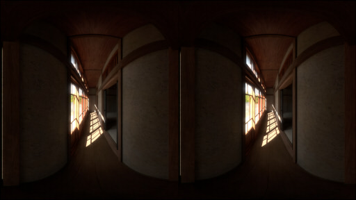
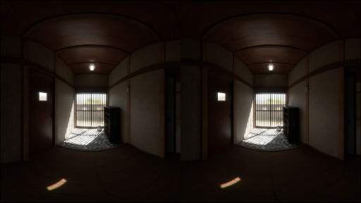

2021/10/17 Update.
2021/10/17 Update.
下の画像をクリックすると、WebXR表示になります。
Oculus Questの場合はOculus Browserからアクセスできます。
Omniverse Create(2021.3.6)で4K解像度のパノラマレンダリングで180度分抜き出し、視差を考慮してSBSで並べました。
| Rendering |
Omniverse Create (2021.3.6) |
| Resolution |
3840 x 2160 pixel |
| Panorama |
VR180 / Side by Side |
| IPD |
64mm |

